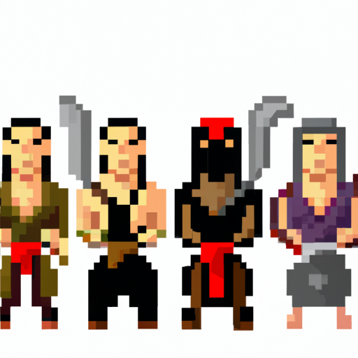

Top 6 Characters in Mortal Kombat X
Mortal Kombat X has some of the most iconic characters in video game history, and its fans have been eagerly anticipating the game's release. The game has been out for a few months now, so it's time to rank the top six characters in the game. Here they are:
1. Scorpion: Scorpion is one of the most recognizable characters in the series, and he remains one of the best in Mortal Kombat X. His special moves are incredibly powerful, and he has a wide variety of combos that make him a force to be reckoned with.
2. Sub-Zero: Sub-Zero is another classic character who has been a part of the series since the very beginning. His ice-based moves make him incredibly versatile, and his combos are among the best in the game.
3. Liu Kang: Liu Kang is often overlooked, but he is one of the strongest characters in the game. His special moves are incredibly powerful, and he has some of the most difficult combos in the game.
4. Cassie Cage: Cassie Cage is a new character in the series, and she has quickly become one of the most popular characters in the game. Her special moves are incredibly powerful, and her combos can be devastating.
5. Kano: Kano is another classic character who has been a part of the series since the very beginning. His special moves are incredibly powerful, and his combos are among the best in the game.
6. Kitana: Kitana is another classic character who has been a part of the series since the very beginning. Her special moves are incredibly powerful, and her combos are among the best in the game.